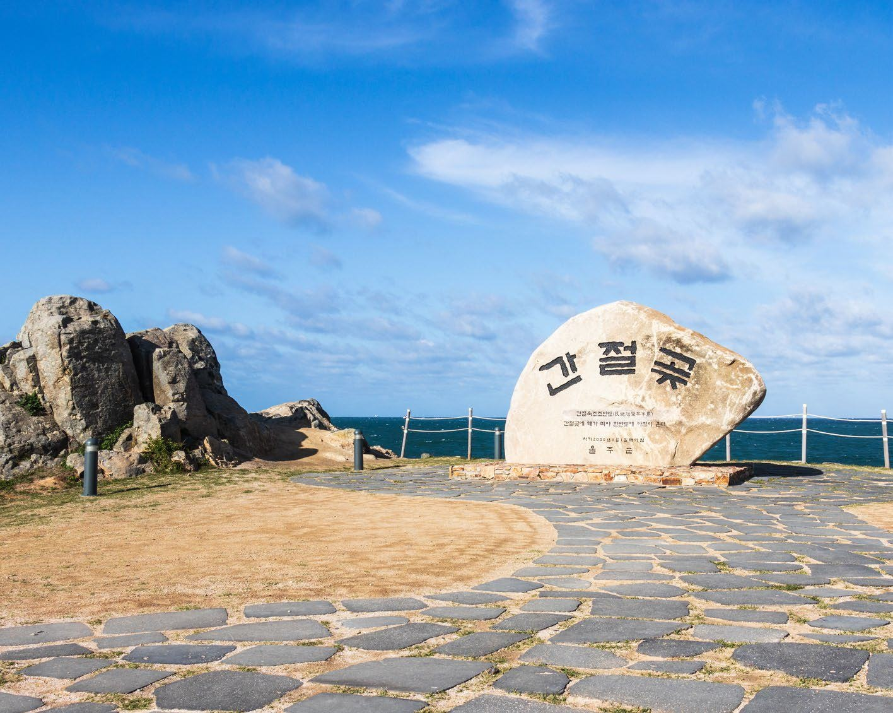
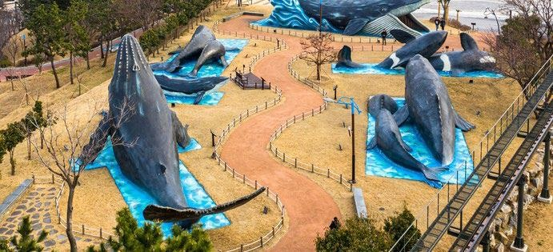
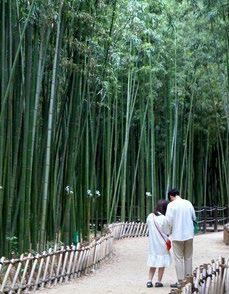
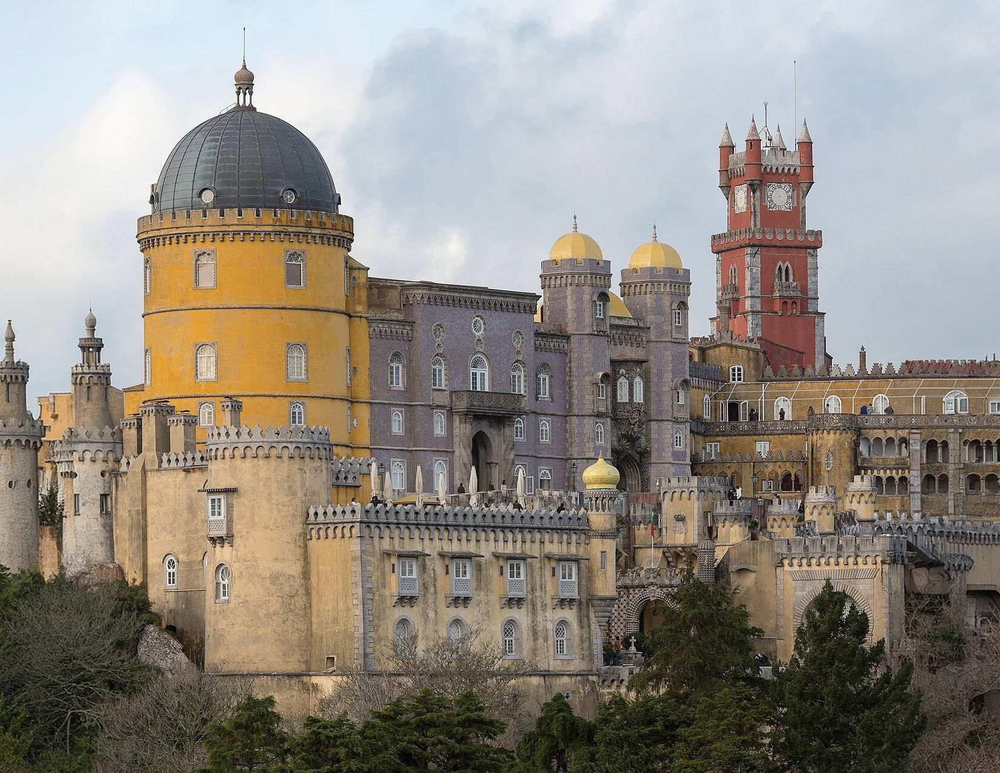
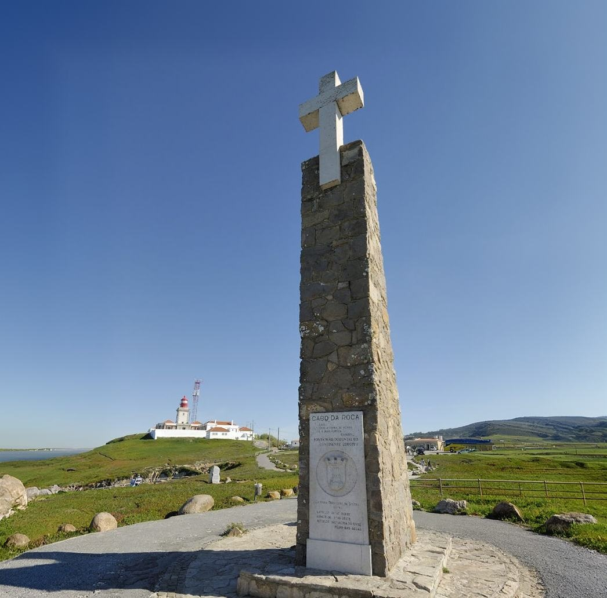
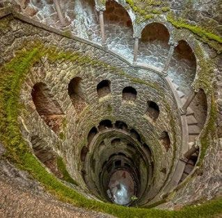
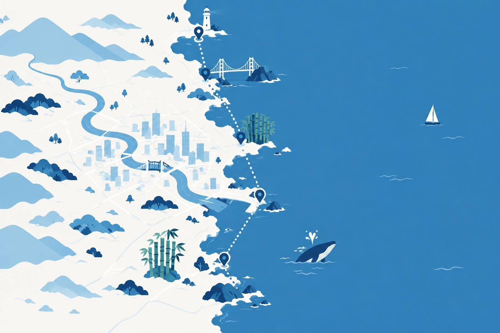
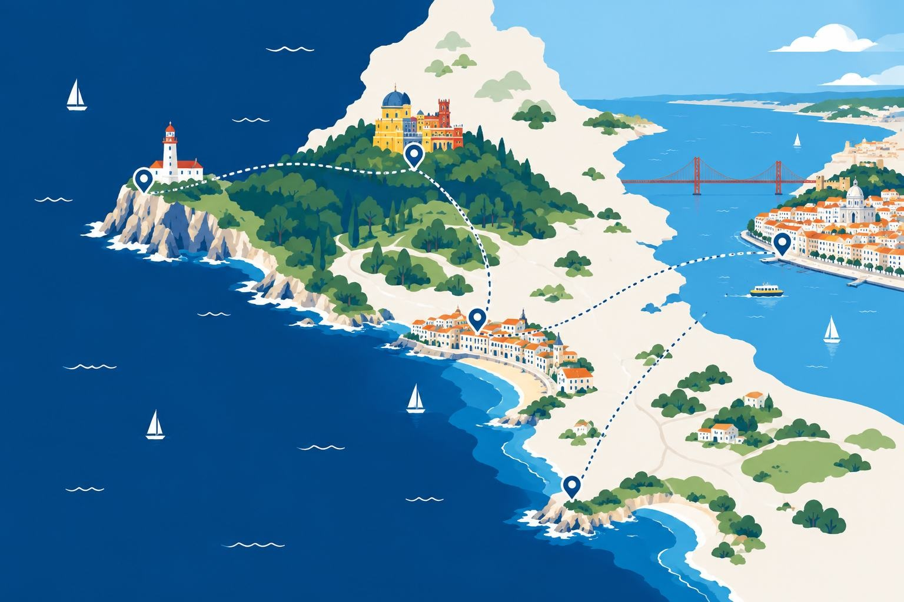

TWIN TRIP KEPCO JANUARY 2027
해가 떠오르고,
땅이 끝나는 곳, 그곳에 서다
울산 간절곶 vs 포르투갈 호카곶
Twin Trip
끝과 시작 사이
한 대륙의 동쪽 끝과 서쪽 끝. 1만 km 넘게 떨어진 두 곶은 서로를 모른 채 저마다의 바다를 향해 서 있다. 한 해의 첫날, 한쪽에서 새해의 해가 떠오를 때 다른 한쪽에서는 아직 지난해의 밤이 흐른다.
끝과 시작이 맞닿은 두 곳으로 새해 첫 여행을 떠나보자.
1월 1일 오전 7시 31분 무렵, 울산 울주군의 간절곶 바다 위로 해가 고개를 내민다. 포항 호미곶보다 1분 이른, 한반도 육지에서 가장 먼저 맞는 새해 첫 해다. 먼바다의 뱃사람들 눈에 이 땅이 긴 간짓대(대나무 장대)처럼 뻗어 보였다 해서 붙은 이름이지만, 요즘은 우리말 ‘간절하다’와 소리가 같아 간절한 소망을 비는 곳으로 더 자주 불린다.
1920년 처음 불을 밝힌 하얀 등대 아래로 잔디 언덕이 바다까지 이어지고, 언덕 끝에는 실제로 우편물을 거둬 가는 높이 5m의 빨간 ‘소망우체통’이 서 있다. 바닷가 바위에는 왜국으로 떠난 남편을 기다리다 망부석이 되었다는 신라 충신 박제상의 아내와 두 딸의 모녀상이 수평선을 바라본다. 공기가 차고 맑은 겨울에는 해가 그리스 문자 Ω를 닮은 ‘오메가 일출’이 나타나기도 하니, 인파가 빠진 1월 평일 새벽에 다시 찾아도 좋다.

바다를 따라 북쪽으로
해를 맞았다면 바다를 따라 북쪽으로 걸음을 옮겨 보자. 차로 10분 남짓이면 닿는 진하해수욕장 앞바다에는 작은 무인도 명선도가 떠 있다. 물이 빠지면 모래톱이 드러나 걸어서 섬에 닿을 수 있고, 해송이 자란 섬 뒤로 해가 떠오르는 장면은 사진가들이 아끼는 구도다.
해변 뒤 언덕에는 임진왜란 때 왜장 가토 기요마사가 쌓은 서생포왜성이 남아 있다. 아픈 역사의 흔적이지만 지금은 성벽을 따라 걷는 조용한 산책길이 되어, 오르면 진하 바다와 회야강 하구가 한눈에 들어온다. 해안을 따라 50분쯤 더 올라가면 울산 동구의 대왕암공원이다. 1만 5,000그루 해송 숲길 끝, 신라 문무대왕의 왕비가 죽어서도 나라를 지키는 용이 되어 잠겼다는 전설의 바위 대왕암이 파도를 받아 낸다. 중간 기둥 하나 없이 바다 위 협곡을 잇는 303m 출렁다리를 건너면 울산의 바다가 발아래로 펼쳐진다.
고래의 포구에서 정원의 도시로
울산의 또 다른 얼굴은 도시 안에 있다. 장생포는 1986년 상업 포경이 금지되기 전까지 고래잡이로 번성했던 포구다. 고래문화마을은 1960~70년대 마을의 골목과 가게를 되살려, 바다를 터전 삼아 살아온 사람들의 시간을 걸으며 엿보게 한다.
공업 도시 울산이 어떻게 바뀌어 왔는지는 태화강에서 가장 잘 보인다. 한때 오염된 강의 대명사였던 태화강은 수십 년에 걸쳐 되살아나 2019년 대한민국 두 번째 국가정원이 되었다. 강변을 따라 길게 이어진 십리대숲은 낮에는 바람에 댓잎 부딪는 소리로, 해가 지면 은은한 조명이 켜진 ‘은하수길’로 여행자를 맞는다. 새해 첫 해를 본 하루를, 대숲 사이로 별빛 같은 조명을 따라 걸으며 마무리해 보는 것도 좋겠다.


간절곶에 새해 첫 해가 떠오르는 순간, 포르투갈은 아직 12월 31일 밤 10시 반이다. 9시간의 시차를 건너 유라시아 대륙의 반대편 끝으로 가면 호카곶(Cabo da Roca)이 있다. 해발 140m 절벽 아래로 대서양이 쉼 없이 밀려와 부서지고, 이보다 서쪽에는 더 이상 대륙의 땅이 없다. 절벽 위 십자가 기념비에는 포르투갈의 국민 시인 루이스 드 카몽이스가 대항해시대를 노래한 서사시 『우스 루지아다스』의 한 구절이 새겨져 있다.
“여기, 땅이 끝나고
바다가 시작되는 곳.”
이곳이 가장 아름다운 시간은 해 질 녘이다. 1월에는 오후 5시 반 무렵 해가 대서양 아래로 내려앉으며, 1772년 처음 불을 밝힌 붉은 지붕의 등대와 절벽 능선을 금빛 실루엣으로 물들인다. 관광안내소에서는 이름과 날짜를 적고 밀랍 봉인을 찍은 ‘유럽 대륙 최서단 방문 증명서’를 발급해 준다. 한반도의 첫 해를 본 사람이 대륙의 마지막 해까지 보았다는 증명이라면, 이보다 특별한 새해 기념품도 없다.

숲의 궁전, 바다의 동굴
호카곶을 사이에 두고 북쪽에는 숲이, 남쪽에는 해안이 있다. 버스로 40분 거리의 신트라는 1995년 도시 전체가 유네스코 세계유산(문화경관)에 오른 숲속의 왕실 휴양지다. 산꼭대기에는 19세기 페르난두 2세가 지은 페나 궁전이 노랑과 빨강의 외벽을 두르고 동화 속 성처럼 서 있고, 능선을 따라 이어진 무어인의 성에 오르면 신트라의 숲 너머로 대서양까지 내려다보인다.
헤갈레이라 별장의 깊이 27m ‘입문의 우물’은 나선 계단을 따라 땅속으로 내려가며 둥근 하늘을 올려다보는 곳으로, 여행자들의 인증 사진 속 단골 장면이다. 1월의 신트라는 안개가 잦은데, 오히려 그 안개 덕분에 성과 숲이 한층 신비롭다. 호카곶에서 남쪽으로 내려가면 우아한 해변 도시 카스카이스가 나온다. 파도가 바위 동굴을 때리며 굉음을 내는 ‘지옥의 입(Boca do Inferno)’에서는 이름만큼 거친 대서양을 실감할 수 있다.


땅끝에서 떠난 배들의 도시
여정의 끝은 땅끝에서 떠난 배들의 출발점, 리스본이다. 테주강이 바다로 나가는 어귀의 벨렝 지구에는 엔히크 왕자 서거 500주년을 기려 세운 발견기념비와 16세기 요새 벨렝탑, 바스쿠 다 가마가 잠든 제로니무스 수도원이 모여 있다. 1837년부터 같은 비법으로 굽는다는 ‘파스테이스 드 벨렝’의 따뜻한 에그타르트 한 입은 이 거리의 오랜 의식이다.
구시가로 올라가면 노란 28번 트램이 좁은 언덕 골목을 오르내리고, 해가 지면 알파마의 작은 식당에서 파두가 흘러나온다. 2011년 유네스코 인류무형유산에 오른 이 노래의 정서는 ‘사우다드(saudade)’, 떠나간 것과 아직 오지 않은 것을 함께 그리워하는 마음이다. 바다 너머를 꿈꾸던 사람들과 그들을 기다리던 사람들의 마음이 오늘의 리스본 골목에 그대로 배어 있다.
리스본 호시우역에서 기차로 신트라까지 약 40분, 신트라역에서 1253번 버스를 타면 호카곶까지 약 40분 걸린다. 카스카이스에서는 1624번 버스가 다닌다. 1월 리스본은 8~15℃ 안팎으로 온화하지만 곶 위의 바닷바람은 매서우니 방풍 외투를 챙기자.
두 개의 여행, 나란히 걸어보기
Twin Route.

ULSAN
- 간절곶
한반도 육지에서 가장 먼저 새해 첫 해를 맞는 곳
- 진하해수욕장·명선도
물이 빠지면 걸어서 닿는 작은 무인도
- 서생포왜성
진하 바다와 회야강 하구가 내려다보이는 산책길
- 대왕암공원
해송 숲길과 303m 출렁다리
- 장생포 고래문화마을
1960~70년대 포구 마을의 골목과 가게
- 태화강 국가정원
밤이면 조명이 켜지는 십리대숲 은하수길

PORTUGAL
- 호카곶
유라시아 대륙 최서단, 해 질 녘의 등대
- 신트라 페나 궁전
노랑과 빨강 외벽의 19세기 궁전
- 무어인의 성
숲 너머 대서양까지 보이는 능선
- 헤갈레이라 별장
깊이 27m 나선 계단 ‘입문의 우물’
- 카스카이스
파도가 바위 동굴을 때리는 ‘지옥의 입’
- 리스본 벨렝·알파마
에그타르트, 28번 트램, 파두
본문·이동 시간·교통 정보는 제공된 2027년 1월호 원고 기준입니다. 실제 여행 전 운항·운행 정보와 현지 통제를 확인하세요.